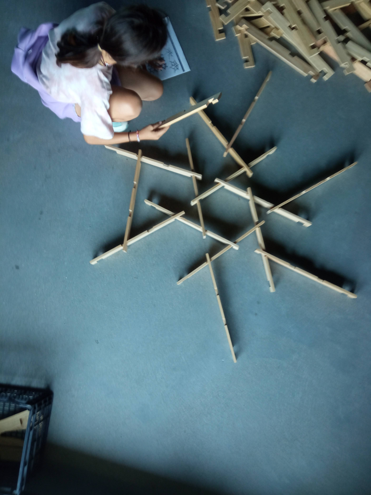

Consultar
LeoPalos nos invita a descubrir los secretos de las estructuras de Leonardo Da Vinci, transportándonos hasta el Codex Atlanticus, donde el genio ideó las cúpulas autoportantes capaces de sostenerse sin tornillos ni adhesivos, solo por su peso y la gravedad.
Con estos palos se construyen cúpulas, puentes y cubiertas recíprocas donde cada pieza sostiene a la siguiente, formando un entramado que distribuye el peso de forma natural. Una lección de física que se aprende con las manos.
Disponible en dos tamaños —50 o 250 piezas— para adaptarse a talleres, escuelas y hogar. Un kit artesanal de madera de contrachapado, inspirado en la colección Lógica Recíproca.
Un sistema de palos recíprocos que se sostiene solo. Empezando por puentes pequeños, los niños avanzan hasta cúpulas que pueden habitar, descubriendo entramado, tensión y equilibrio.
Con pocas piezas se construye el clásico puente de Leonardo: los palos se entrelazan y sostienen entre sí. Es el primer contacto con la estructura recíproca y su sorprendente estabilidad.
Al ampliar el número de piezas, se forman cúpulas autoportantes y bóvedas que pueden cubrir espacios y cobijar construcciones más grandes, entendiendo la distribución del peso en el aire.
Con el kit grande, la cúpula gana tamaño hasta permitir entrar dentro: un refugio recíproco donde la geometría de Leonardo se convierte en espacio vivido.
Más allá de las propuestas, cada montaje libera la imaginación: torres, laberintos, esculturas. La estructura recíproca se convierte en un lenguaje propio para inventar.
Cúpulas autoportantes, puentes, cubiertas y estructuras recíprocas. Todo sin tornillos ni adhesivos.
Sí, disponible en versión de 50 o 250 piezas según el nivel de complejidad deseado.
Sí, está diseñado para talleres, escuelas y juego en familia. Fomenta la cooperación y el aprendizaje activo.
Los kits se producen de forma artesanal en el taller de Coloniales. Escríbenos por WhatsApp para informarte de disponibilidad y precios.
Si tienes dudas sobre el kit, cómo funciona o quieres saber más, escríbenos por WhatsApp.